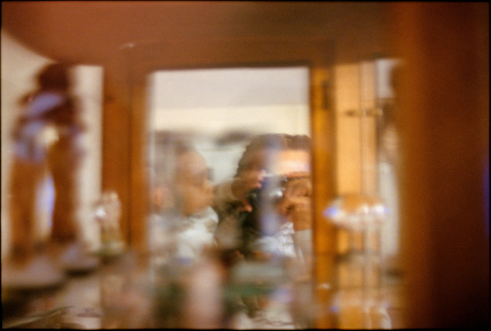

Henry Lux / New York photographer
Fatherhood
Fatherhood comes from a desire to break cycles and create new narratives. It is shaped by presence, attention, and care.
View the project

Project
Labor Creates
A photographic project about work, hustle, and survival in New York City.
View the projectSelected portfolios